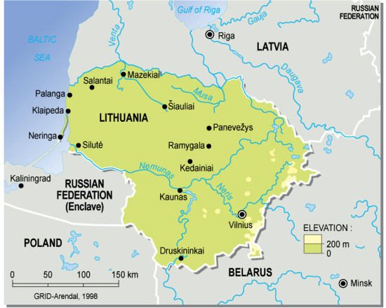
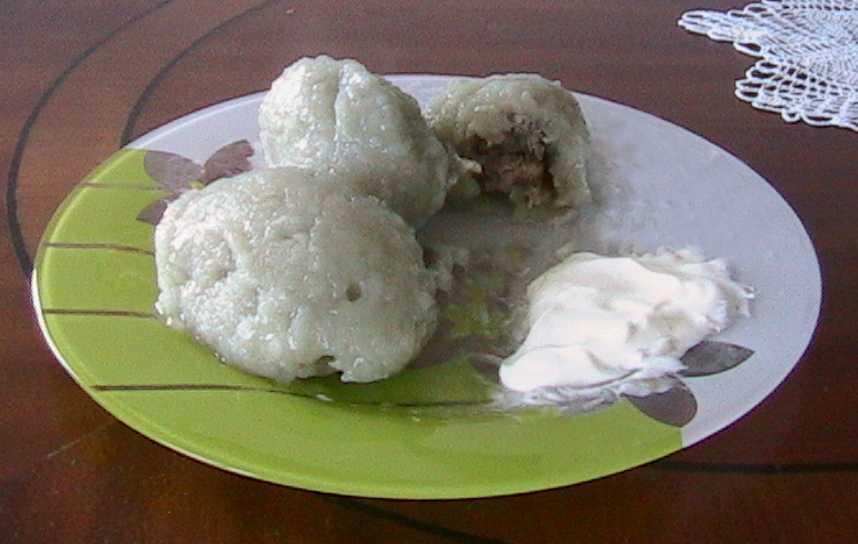

Acerca de Lituania
Lituania es la república báltica más extensa, y la más poblada, con casi 3 millones de habitantes. Hace frontera con Letonia al norte, con Bielorrusia al este, con Polonia al sur y con el exclave ruso de Kaliningrado y el mar báltico al oeste. Las ciudades más pobladas son Vilnius (550.000 habitantes), Kaunas (320.000), Klaipeda (197.000) y Šiauliai (103.000). Este país es conocido mundialmente por el baloncesto, habiendo aportado jugadores de renombre como Arvydas Sabonis, Mantas Kalnietis o Robertas Javtokas. Pero obviamente Lituania no es sólo baloncesto: este país tiene bellas ciudades plagadas de historia como Vilnius o Kaunas, gentes amables, una gastronomía suculenta y unos bellos paisajes. Las dunas de arena más altas de toda Europa están aquí, en concreto en la península de Curonia, y las mayores reservas de ámbar de Europa también. Los lituanos son mayoritariamente católicos, aunque en la costa hay una pequeña minoría luterana, ya que ese territorio perteneció a Prusia Oriental (Alemania) hasta 1923.
Historia
Las primeras referencias escritas conocidas a Lituania datan del año 1009, recogidas en el manuscrito alemán medieval Quedlinburger Annalen. Por aquel entonces llamada Litua, en el siglo XIII se erigió como un estado debido a la amenaza de las cruzadas bálticas emprendidas por la Orden Teutónica para cristianizar a los paganos bálticos. Mientras los letones y los estonios fueron conquistados por los alemanes y daneses, Lituania consiguió mantenerse firmemente independiente. Aunque fue proclamado reino en 1253 al recibir el duque Mindaugas la corona del Papa, fue el último país de Europa en ser cristianizado,en 1387, pues los lituanos fueron muy reacios a abandonar sus creencias paganas, defendiéndolas hasta la muerte si era necesario. Dos años después se unió con Polonia mediante unión dinástica. En 1410, un ejército unido de polacos, lituanos y rusos derrotaron definitivamente a los cruzados alemanes en la batalla de Grunwald, terminando así con el intento de dominio teutónico que había amenazado la zona desde hacía dos siglos.En 1569 se forjó de manera definitiva la unión con Polonia, dando lugar a la República de las Dos Naciones, un poderoso estado que abarcaba desde el mar Báltico hasta el mar Negro, en lo que hoy es el sudoeste de Ucrania y el oeste de Rusia.  El gobierno de esta república fue gradualmente debilitándose, en parte debido a las guerras con sus poderosos vecinos: Rusia, Prusia y Suecia. No obstante acudieron en ayuda de los austriacos durante el sitio de 1683 de Viena por parte del Imperio Otomano. A lo largo del siglo XVIII la República de las Dos Naciones se fue debilitando cada vez más, hasta que a finales de ese siglo, en 1795, comienzan las particiones. El norte y el oeste fueron anexionados a Prusia, el sur a Austria y el este a Rusia, por lo que toda Lituania quedó bajo dominio imperial ruso, durante el reinado de Catalina II. En 1812 Vilnius fue invadida por Napoleón, a su paso hacia Moscú. En 1831 y 1863 hubo levantamientos populares contra el Imperio Ruso, pero fueron duramente sofocados. A lo largo de este siglo se gestó el sentimiento nacionalista, que deribó en la independencia en 1917, aprovechando el caos generado por la Revolución Rusa. Entre 1915 y 1918 el país fue ocupado por Alemania, y con ayuda de estos frenaron a los bolcheviques, quienes querían reconquistar Lituania. Entre 1920 y 1939 la capital fue Kaunas, pues Vilnius fue ocupada por los polacos. Esta acción nunca fue aceptada por los lituanos y creció un fuerte sentimiento antipolaco en Lituania. En 1939 Alemania invadió Klaipėda (antigua Memelburg prusiana), y tras la invasión soviética de Polonia en 1940 el Ejército Rojo devolvió Vilnius a Lituania, por lo que se convirtió en la capital. Ese mismo año el país fue invadido por la URSS, tal y como Hitler y Stalin acordaron en secreto. Un año después Lituania fue ocupada por la Alemania Nazi. En un principio los lituanos recibieron bien a los alemanes, les veían como unos liberadores frente a la URSS, y los nazis se aprovecharon de eso y del fuerte antisemitismo de los lituanos para llevar a cabo masacres contra la población judía de Lituania. Durante siglos Vilnius fue conocida como la Jerusalén del Norte, por su gran población judía. Antes de la guerra había 60.000 en la ciudad, representando el 25% de la población. Tras la contienda, en 1945, sólo quedaban 900. En 1944 fue invadida nuevamente por la URSS, y perteneció a esta hasta 1991. Durante la época soviética, el país se industrializó bastante, y llegó a ser de las repúblicas más avanzadas de la Unión, junto con Estonia y Letonia. Aunque Lituania no fue tan eslavizada (es decir, no recibió el influjo de inmigrantes rusos, ucranianos y bielorrusos) como Letonia o Estonia, el ruso se convirtió en la lengua oficial junto con el lituano. La mayor parte de los polacos que vivían en Vilnius huyeron a Polonia o a Estados Unidos tras la guerra, quedando muy pocos. A partir de 1985, con la nueva política aperturista de la URSS iniciada por Mijaíl Gorbachov, conocida como Perestroika, Lituania, Letonia y Estonia empezaron a caminar hacia la libertad. En 1989 una cadena humana conocida como Cadena Báltica fue desde Tallinn hasta Vilnius pasando por Riga para exigir al gobierno de Moscú la independencia. Los sectores más conservadores de la URSS atacaron a la población civil, y las condenas por parte de Occidente no se hicieron esperar. Finalmente en 1991 la URSS no tuvo más remedio que aceptar la independencia de las tres naciones bálticas. La recuperación de Lituania a lo largo de los años 90 fue lenta, y muchos emigraron a Europa Occidental, principalmente a Reino Unido e Irlanda. En 2004 Lituania entró en la Unión Europea, y en 2015 adoptó el euro como moneda oficial, sustituyendo al litas.
El gobierno de esta república fue gradualmente debilitándose, en parte debido a las guerras con sus poderosos vecinos: Rusia, Prusia y Suecia. No obstante acudieron en ayuda de los austriacos durante el sitio de 1683 de Viena por parte del Imperio Otomano. A lo largo del siglo XVIII la República de las Dos Naciones se fue debilitando cada vez más, hasta que a finales de ese siglo, en 1795, comienzan las particiones. El norte y el oeste fueron anexionados a Prusia, el sur a Austria y el este a Rusia, por lo que toda Lituania quedó bajo dominio imperial ruso, durante el reinado de Catalina II. En 1812 Vilnius fue invadida por Napoleón, a su paso hacia Moscú. En 1831 y 1863 hubo levantamientos populares contra el Imperio Ruso, pero fueron duramente sofocados. A lo largo de este siglo se gestó el sentimiento nacionalista, que deribó en la independencia en 1917, aprovechando el caos generado por la Revolución Rusa. Entre 1915 y 1918 el país fue ocupado por Alemania, y con ayuda de estos frenaron a los bolcheviques, quienes querían reconquistar Lituania. Entre 1920 y 1939 la capital fue Kaunas, pues Vilnius fue ocupada por los polacos. Esta acción nunca fue aceptada por los lituanos y creció un fuerte sentimiento antipolaco en Lituania. En 1939 Alemania invadió Klaipėda (antigua Memelburg prusiana), y tras la invasión soviética de Polonia en 1940 el Ejército Rojo devolvió Vilnius a Lituania, por lo que se convirtió en la capital. Ese mismo año el país fue invadido por la URSS, tal y como Hitler y Stalin acordaron en secreto. Un año después Lituania fue ocupada por la Alemania Nazi. En un principio los lituanos recibieron bien a los alemanes, les veían como unos liberadores frente a la URSS, y los nazis se aprovecharon de eso y del fuerte antisemitismo de los lituanos para llevar a cabo masacres contra la población judía de Lituania. Durante siglos Vilnius fue conocida como la Jerusalén del Norte, por su gran población judía. Antes de la guerra había 60.000 en la ciudad, representando el 25% de la población. Tras la contienda, en 1945, sólo quedaban 900. En 1944 fue invadida nuevamente por la URSS, y perteneció a esta hasta 1991. Durante la época soviética, el país se industrializó bastante, y llegó a ser de las repúblicas más avanzadas de la Unión, junto con Estonia y Letonia. Aunque Lituania no fue tan eslavizada (es decir, no recibió el influjo de inmigrantes rusos, ucranianos y bielorrusos) como Letonia o Estonia, el ruso se convirtió en la lengua oficial junto con el lituano. La mayor parte de los polacos que vivían en Vilnius huyeron a Polonia o a Estados Unidos tras la guerra, quedando muy pocos. A partir de 1985, con la nueva política aperturista de la URSS iniciada por Mijaíl Gorbachov, conocida como Perestroika, Lituania, Letonia y Estonia empezaron a caminar hacia la libertad. En 1989 una cadena humana conocida como Cadena Báltica fue desde Tallinn hasta Vilnius pasando por Riga para exigir al gobierno de Moscú la independencia. Los sectores más conservadores de la URSS atacaron a la población civil, y las condenas por parte de Occidente no se hicieron esperar. Finalmente en 1991 la URSS no tuvo más remedio que aceptar la independencia de las tres naciones bálticas. La recuperación de Lituania a lo largo de los años 90 fue lenta, y muchos emigraron a Europa Occidental, principalmente a Reino Unido e Irlanda. En 2004 Lituania entró en la Unión Europea, y en 2015 adoptó el euro como moneda oficial, sustituyendo al litas.
Idiomas
El único idioma oficial de Lituania es el lituano, un idioma perteneciente a la rama báltica de las lenguas indoeuropeas. Junto al letón son los dos únicos idiomas de esta familia que siguen existiendo, el resto fueron extintos principalmente por la colonización germana, aunque en el siglo XVIII todavía había hablantes de prusiano antiguo en lo que actualmente es Kaliningrado. También hay minorías de habla polaca (10%) y rusa (9%), estando los primeros concentrados sobre todo en Vilnius y los segundos en el noreste del país. El inglés es comprendido por la mayoría de los jóvenes, aunque la gente mayor tiene problemas para entenderlo. Como resultado de la herencia germana en la costa, aún se puede encontrar gente en Klaipeda que entienda el alemán. A continuación unas palabras y frases básicas en lituano:
 Hola-Sveiki
Hola-Sveiki
Adiós-Atsisveikina /atsisvéikina/
Gracias-Ačiū /achiuu/
Por favor-Prašau /prashau/
¿Qué tal?-Kaip laikasi? /kaip láikasi/
Bien, mal-Gerai, blogai /guérai, blógai/
¿Hablas inglés/español/lituano?-Ar tu kalbi angliškai/ispaniškai/lietuviškai? /ar tu kálbi ánglishkai-ispánishkai-ietuvishkái/
¿Dónde está...?-Kur yra....? /kur úira/
Estación de tren-Geležinkelio Stotis /gueléyinkelio stótis/
Aeropuerto-Oro Uostas /orouóstas/
Autobús-Autobusas /autóbusas/
Troleibús-Troleibusas /troléibusas/
Coche-Automobilis /automóbilis/
Cultura
La cultura de Lituania mezcla aspectos propios de su herencia báltica con otros de origen eslavo (Polonia, Rusia) y germánico (Alemania, Suecia). En cuanto a literatura, los escritores más importantes han sido Vincas Krèvè-Mickevicius (novelista y dramaturgo), Alfonsas Nyka-Niliunas (poeta y novelista) y Marius Katiliskis. El primer libro en lituano fue impreso en 1562 en Königsberg (actualmente Kaliningrado).
La mayoría de los lituanos son católicos, al contrario que en Letonia y Estonia, donde son sobre todo luteranos. Un 5% de la población es ortodoxa, principalmente los rusos y bielorrusos. Durante la época comunista la religión fue duramente perseguida, muchas iglesias fueron abandonadas por los soviéticos y algunos monumentos como la Colina de las Cruces fueron vandalizados.
Lituania tiene una larga tradición en cuanto a música folklórica se refiere. En general el canto es un rasgo compartido con las otras dos repúblicas bálticas, forma parte de la identidad de estos países. Llamadas Dainos, este tipo de canciones habla sobre temas de la mitología báltica y de la historia de Lituania. Pueden ser cantadas a una sola voz o a capella. 
Gastronomía
La gastronomía de Lituania viene influenciada por el frío clima, por lo que las patatas, la cebada, el centeno, la remolacha, las bayas y las setas son bastante frecuentes en la cocina de este país.
La influencias eslavas están muy presentes, como por ejemplo el barščiai, la versión lituana del boršč ucraniano. También hay platos de origen alemán, como el kugelis, un pudding de patata, y salchichas (llamadas vėdarai). Al igual que en Rusia, la tarta Napoléon también es bastante popular, introducida por los franceses a principios del siglo XIX.El plato más representativo de la cocina lituana es el Cepelinai, que son empanadillas grandes rellenas de patata acompañadas de nata agria (muy común en el este de Europa).